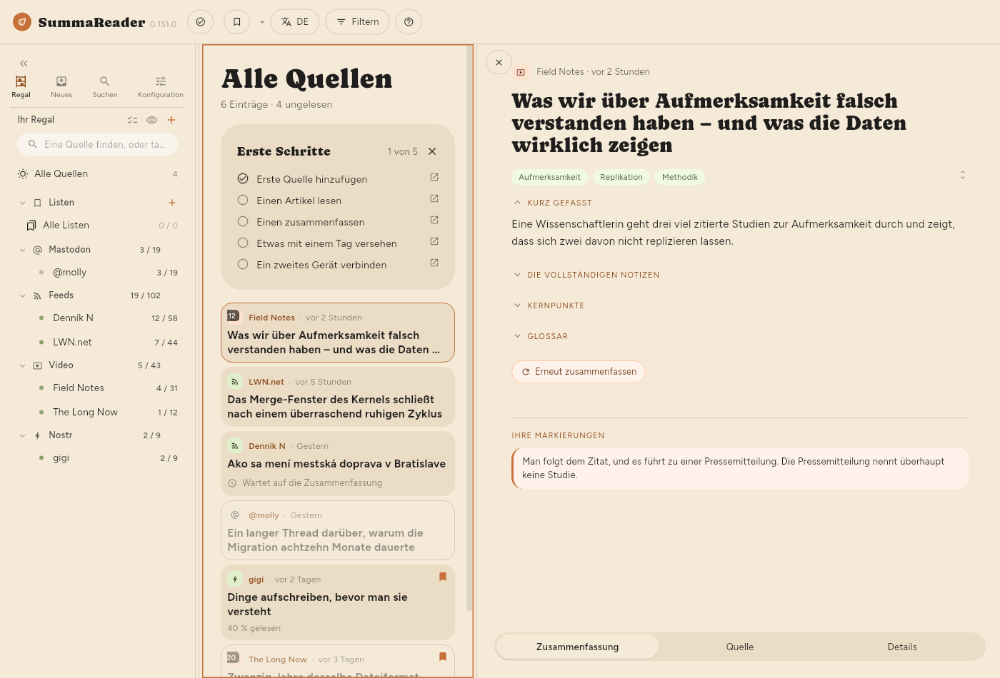

← Das Fenster · Inhalt · Zusammenfassungen →
Lesen
Klicken Sie auf einen Artikel oder drücken Sie ↵. Je nach Fenster und der unter Konfiguration › Grundlegend › Navigation › Bereiche und Regal › Anordnung gewählten Anordnung öffnet er sich neben der Liste, darüber oder darunter oder nimmt das ganze Fenster ein. Auf einem Smartphone nimmt er immer den ganzen Bildschirm ein.

Die drei Tabs
- Zusammenfassung — was das Modell geschrieben hat, in drei einklappbaren Abschnitten: Kurz gefasst (drei Sätze), Kernpunkte (einer pro Thema, jeder mit einem Titel und ein paar erklärenden Sätzen) und Glossar (die Begriffe, die es für erklärenswert hielt). Punkte aus einem Video tragen Zeitmarken, die an die Stelle springen.
Shift+1–3klappen sie ein. - Quelle — der Artikel selbst oder das Transkript.
- Details — woher er kam, wann, welches Modell ihn zusammengefasst hat und was das gekostet hat.
1–3 springen zwischen ihnen.
Zusammenfassungen, die entstanden sind, bevor diese App aufhörte, danach zu fragen, enthalten außerdem Die vollständigen Notizen, eine längere Fassung in Fließtext. Nichts erzeugt sie mehr: Ihr Zweck ist in den Überblick und in die Erklärungen unter jedem Thema eingegangen.
Die Werkzeugleiste
- Speichern — legt ihn in der Liste ab, die das Regal ausgefüllt zeigt; das ist Gespeichert, bis Sie eine andere wählen. Das ▾ daneben, ein Rechtsklick oder langes Drücken wählt eine andere Liste oder legt eine an.
- Als gelesen — bei Artikeln aus einem Feed. Bei eingeschaltetem Ungelesen-Filter bringt Sie das zum nächsten; der letzte schließt den Leser.
- Löschen — nur bei Artikeln, die Sie aufbewahrt haben. Es fragt zweimal, und beim zweiten Mal heißt es Überall löschen?, denn es entfernt den Artikel von jedem Gerät, mit dem Sie synchronisieren, und verhindert, dass ein Feed ihn zurückbringt.
Zwischen Artikeln wechseln
Ziehen Sie den Artikel zur Seite oder nutzen Sie j / k, oder am Artikelende die Leertaste. Wer beim ersten nach rechts zieht, kommt zurück zur Liste. Auf einem Telefon oder in einem schmalen Fenster führt ein Zug vom linken Rand zurück zur Liste, und ein Zug vom rechten Rand öffnet die Webseite. Ein Zug über das Ende oder den Anfang des Artikels hinaus tut nichts, bis Sie ihm eine Aktion geben.
Ein Zug wirkt erst, wenn Sie loslassen. Ist er weit genug, nennt ein kurzer Hinweis die Aktion. Gehen Sie vor dem Loslassen zurück, geschieht nichts. Der nächste Artikel gleitet dann von unten herein, der vorherige von oben. Mit j und k wechselt der Artikel genauso. Auf einem Touchscreen bewegt ein Zug zum nächsten oder vorherigen Artikel diesen Artikel mit Ihrem Finger herein, während Sie ziehen. Der Hinweis erscheint darüber, wenn der Zug weit genug ist, und der Artikel geht zurück, wenn Sie zu früh loslassen.
Beim letzten Artikel der Liste markiert ein Zug zur Seite oder ein Zug zum nächsten Artikel den Artikel als gelesen und führt zurück zur Liste. Eine Meldung sagt Ihnen, dass es der letzte Artikel war, und während eines Zugs sagt es der Hinweis. Beim letzten Artikel einer Seite öffnen beide den ersten Artikel der nächsten Seite.
Wie weit Sie ziehen müssen, bevor das Loslassen die Aktion ausführt, wählen Sie mit Kurz, Mittel oder Lang unter Konfiguration › Grundlegend › Navigation › Gesten › Zuglänge. Das sind ein Drittel, die Hälfte und drei Viertel der Höhe des Artikels. Lang ist die Voreinstellung. Ein schnelles Wischen führt die Aktion bei jeder Länge aus.
Jede dieser sechs Gesten kann eine andere Aktion bekommen, zum Beispiel Gelesen / ungelesen markieren oder Gelesen markieren und den nächsten öffnen. Sie wählen sie unter Konfiguration › Grundlegend › Navigation › Gesten › Gesten im Artikel. Das Wischen über einen Listeneintrag steht unter Konfiguration › Grundlegend › Navigation › Gesten.
Ziehen Sie die Liste auf einem Telefon oder Tablet nach unten, um sie neu zu laden oder Ihre Quellen zu prüfen. Die App fragt: Liste neu laden oder Nach neuen Artikeln suchen. Für eines davon ohne Frage wählen Sie es unter Konfiguration › Grundlegend › Navigation › Gesten › Liste nach unten ziehen.
Scrollen
Ein Klick mit der Maus gibt die Tasten an den Bereich, in den Sie klicken. Ein Klick auf einen Artikel in der Liste öffnet ihn und lässt die Tasten in der Liste, sodass ↓ und ↑ von diesem Artikel aus weitergehen. Um den Artikel mit den Tasten zu scrollen, klicken Sie in den Artikel. Ein Tippen mit dem Finger ändert nicht, welcher Bereich die Tasten hat.
Ist der Artikel fokussiert, bewegen ↓ und ↑ ihn um einige Zeilen seines Textes, ebenso eine Raste des Mausrads über ihm. Wie viele Zeilen, legt Konfiguration › Grundlegend › Navigation › Scrollen › Scrollen um fest: 1, 2, 3, 5 oder 8, anfangs 3. Der Schritt folgt der Schriftgröße und dem Zeilenabstand, bleibt also bei jeder Einstellung dieselbe Zahl von Zeilen. Ein Touchpad behält seine eigene feine Bewegung.
Bild ab und Bild auf bewegen um neun Zehntel eines Bildschirms, sodass die zuletzt gelesenen Zeilen oben auf dem nächsten Bildschirm stehen bleiben. Pos1 und Ende gehen an den Anfang und ans Ende. Diese vier bleiben an den Enden des Artikels stehen und gehen nicht weiter.
Die Leertaste ist die Taste, die weitergeht. Sie bewegt um eine Seite nach unten, und steht der Artikel schon am Ende, öffnet sie den nächsten Artikel, der wie bei j von unten hereingleitet. Umschalt+Leertaste bewegt um eine Seite nach oben und öffnet vom Anfang des Artikels aus den vorherigen. Ein Artikel, der ins Fenster passt, wird schon mit der ersten Leertaste umgeblättert. Wer die Taste gedrückt hält, blättert nicht mehr als einen Artikel um.
Tab und Umschalt+Tab wechseln zwischen Regal, Liste und Artikel, ebenso → und ←. Sie halten am ersten und am letzten Bereich an, statt im Kreis zu laufen, und tun nichts, wenn das Fenster nur einen Bereich zeigt. Seit dieser Version gehen ← und → nicht mehr durch die Liste und öffnen nicht mehr den vorherigen und nächsten Artikel, und sie klappen auch keine Gruppe im Regal mehr zu oder auf: Dort klappt ↵ eine Gruppe ein und aus, und ⇧↵ filtert auf sie. Ein Ziehen zur Seite blättert den Artikel weiter um.
Diese Bewegungen gleiten an die neue Stelle, statt zu springen. Konfiguration › Grundlegend › Navigation › Scrollen › Weiches Scrollen schaltet das aus. Es ist auch aus, wenn Ihr System weniger Bewegung verlangt.
Ein neuer Artikel gleitet an seinen Platz: auf dem Telefon von der Seite, beim Gang durch die Liste von oben oder unten. Damit er sofort erscheint, schalten Sie Konfiguration › Grundlegend › Navigation › Scrollen › Artikel hereingleiten aus.
Wenn es keinen Text gibt
Nicht jeder Artikel kommt mit seinem Text an. Der Leser sagt, welcher dieser Fälle es ist:
| Er sagt | Was passiert ist |
|---|---|
| Dieses Video hat keine Untertitel | Es gibt kein Transkript zum Lesen |
| YouTube hat die App gebeten, langsamer zu machen | YouTube hat die Untertitel vorerst verweigert. Unter Linux versucht die App zuerst, sie über die Seite des Videos in ihrem versteckten Seiten-Renderer zu holen, aus dem Player oder aus dem Bereich Transkript anzeigen |
| Die Seite kam an, enthielt aber keinen Artikel | Die Seite baut ihren Text erst im Browser auf |
| Die Website hat statt des Artikels eine Bot-Prüfung geliefert | Eine Seite „Beweisen Sie, dass Sie ein Mensch sind“ |
| Hinter einer Bezahlschranke | Angekommen ist das Angebot |
| Die Seite ist weg | Entfernt oder verschoben |
| Nicht auf diesem Gerät | Ein anderes Gerät hat ihn, oder niemand hat ihn abgerufen |
Spätere Prüfungen versuchen es nach dem Bremsen von selbst noch ein paar Mal. Von den übrigen lohnt nur beim letzten ein neuer Versuch, und Text holen tut genau das.
Wenn die Prüfungen aufhören, es zu versuchen, zeigt die Glocke „N Artikel von <Quelle> konnten nicht gelesen werden“. Text holen in dieser Zeile versucht alle noch einmal in einem Durchgang, und Anhalten im Statusstreifen beendet es.